olivia terry
olivia terry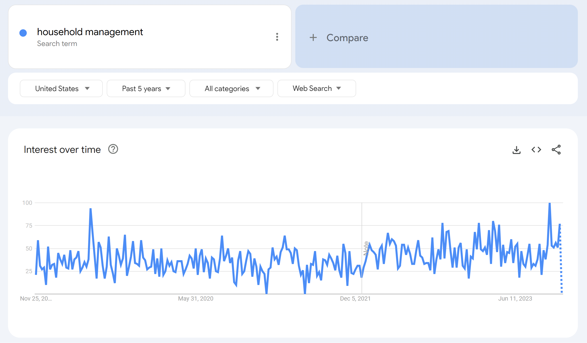
Back to All Projects
PHASE I


PHASE II


Overview
Rumii is a collaborative household management app intended for roommates and household members to organize and delegate responsibilities related to their living situation. The app’s core functionality includes collaborative lists where roommates can track progress on chores and build their shopping lists together, a calendar for keeping up with shared events, and reminders for ensured accountability.
Project Role(s)
UX Designer
Front End Developer
Skills
User Research
Wireframing
Prototyping
User Testing
UX Engineering
Toolkit
🎨Figma
Flutter/Dart
😺GitHub
📱Android Studio
💻VS
Code
PHASE I
User Research
Gauging Interest
Our team brainstormed a collection of search engine phrases which felt most aligned with the characteristics and affordances of Rumii and/or issues that it aims to solve:
- "household management app"
- "productivity app"
- "lifestyle app"
- "time management"
- "roommate problems"
- "family problems"
Google Trends “Interest Over Time”
Then, by utilizing Google Trends, we analyzed the popularity of these search phrases to make inferences about the relevance of the app’s purpose in today’s society.
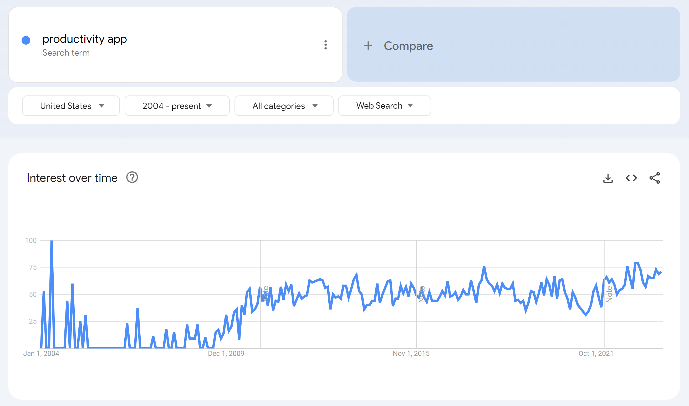
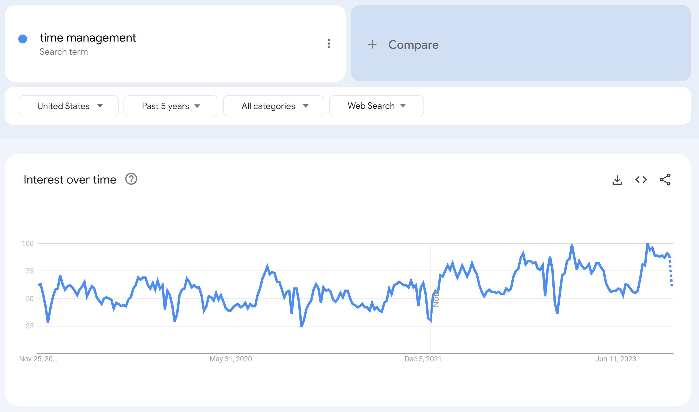
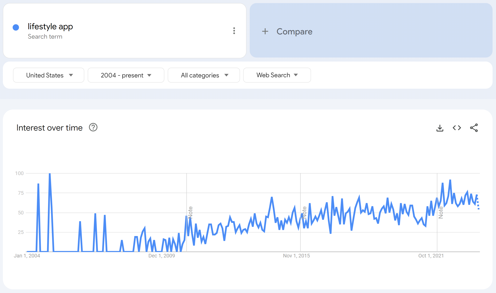
Figures I-IV. Each of these topical trends demonstrated minor to significant growth within the 5-20 year periods of which they were observed. These findings suggest that the topics have grown in relevance in recent years.
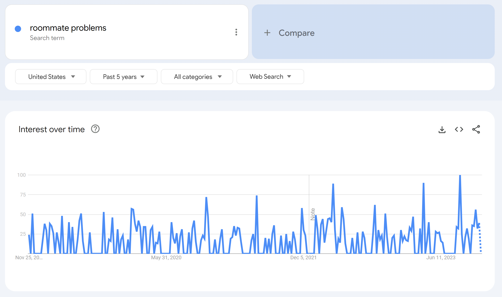
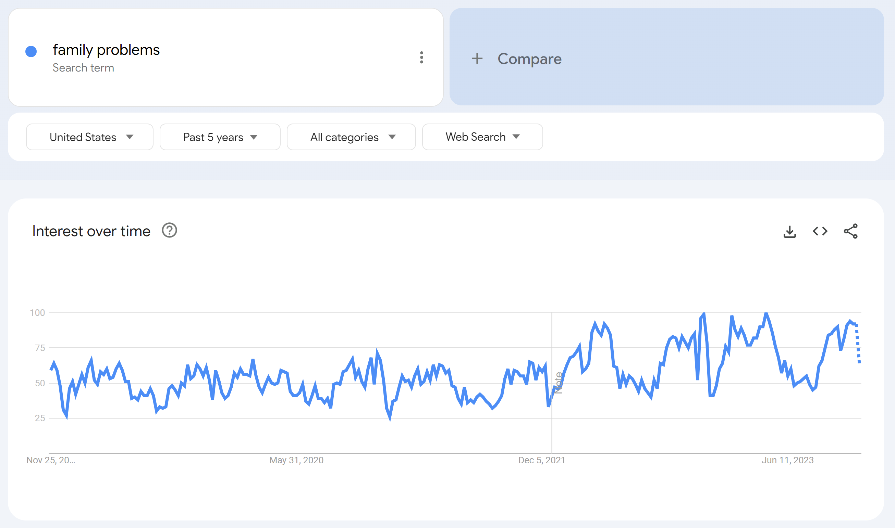
Figures V-VI. Both of these topical trends demonstrated little to no significant growth within the 5 year periods of which they were observed. These findings suggest that the topics have neither gained nor lost relevance in recent years.
Determining Audience
In deciding which groups would benefit most from our app’s features and affordances, we determined the most active group of mobile app users (Figure I, left), along with the demographics of America’s most stressed populations (Figure II, right).
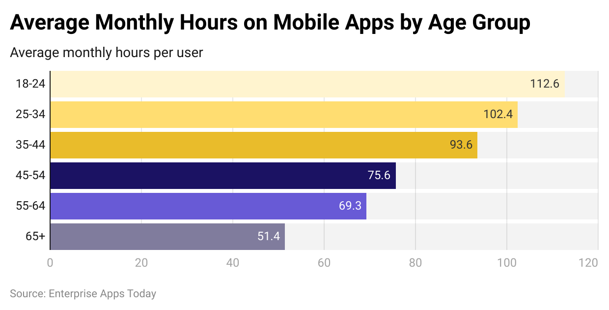
Figure I. Enterprise Apps
Those aged 18-24 (Gen Z) spend the most hours per month on mobile apps, followed closely by 25-34 year-olds (Gen Z and Millennials).
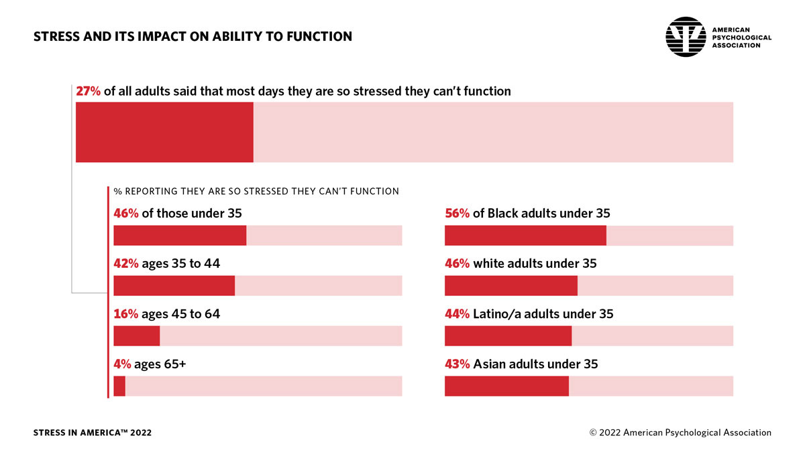
Figure II. APA Study
Those under 35 years old (Gen Z and Millennials) are the most likely to be “…so stressed they can’t function.” 46% of those under 35 report that they are “…so stressed they can’t function.”
Gen Z and Millennials are most likely to both spend the most hours per month on mobile apps and feel a dysfunctional level of stress. Rumii may have the most profound effect in helping these individuals to accomplish their “jobs-to-be-done” which may feel intimidating or impossible under such stress.
In interviews with Gen Z and Millenials, we found that the greatest stressors related to their living situations boiled down to:
Chores
Unclear responsibilities & messy roommates not doing their part
Finances
Awkward conversations about who should cover the cost of groceries and household needs
Disorganization
Losing track of important dates (e.g. rent payments, trash night, pre-planned events, etc.)
Market Analysis
Based on the user needs Rumii aims to solve, the app aligns most with the following popular App Store categories as of the 3rd Quarter 2022 (ranked by share of Apps):
- Lifestyle (7.93%)
- Shopping (5.26%)
- Productivity (4.84%)
Existing Solutions
We evaluated three existing apps that aim to address roommate and living complications, particularly concerning chores, finances, and disorganization.
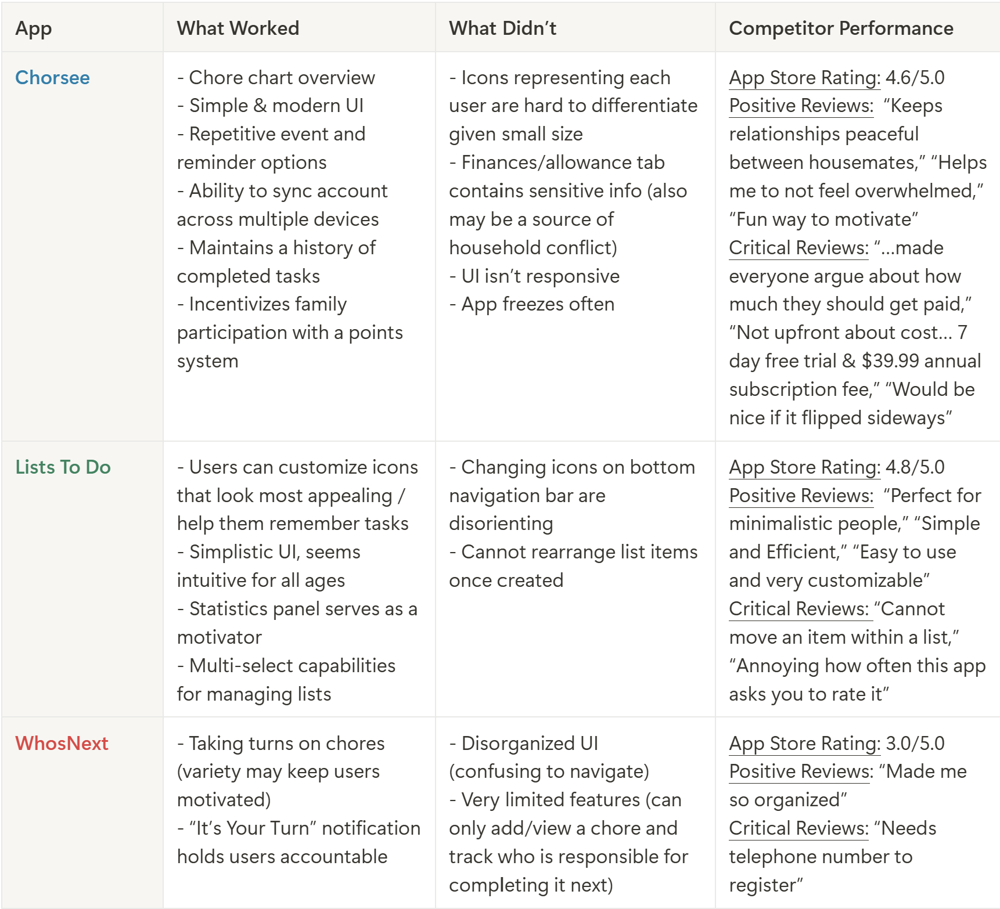
User Personas
Based on interviews with the app's target audience and our research of the market space, we created a series of three user personas to ground our design process.
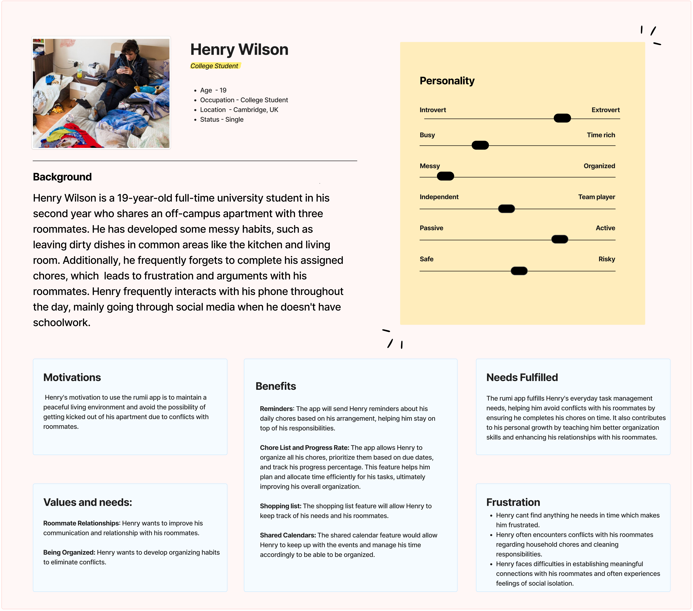
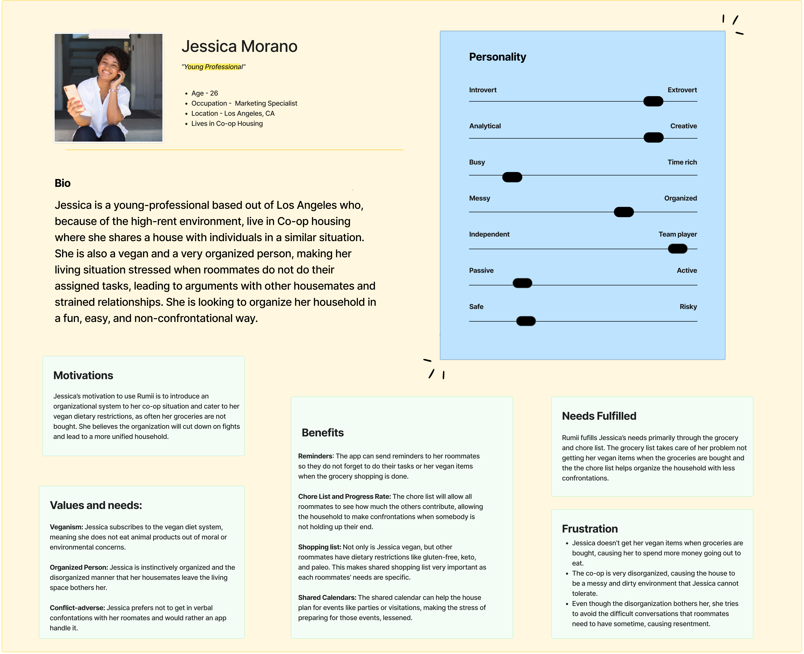
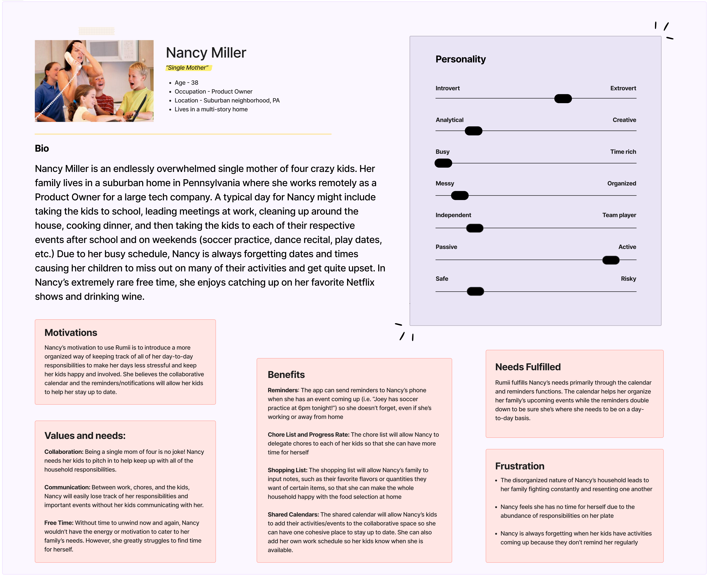
PHASE II
Design & Development
Wireframes
We created quick, low-fidelity wireframes using Figma to visualize an early concept of the app's layout for user testing, including user flows for a Login, Dashboard, Chores, Shopping List, and Calendar page.
I. Login Sequence
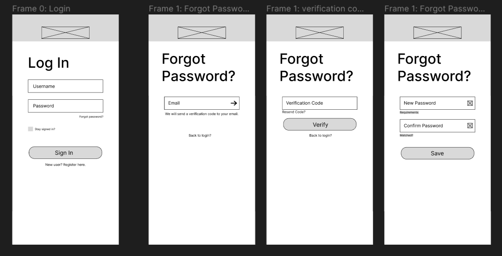
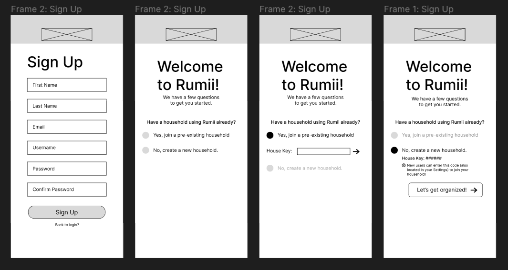
II. Dashboard
Iteration #1
Iteration #2
III. Chore List
IV. Shopping List
V. Calendar
User Testing (Round #1)
Based on a first round of user testing with our classmates (college students, ages 18-22), we gleaned the following insights:
- Many emphasized that we should keep the number of visual elements on each screen to a minimum.
- The proposed layout felt familiar and easy to navigate.
- A modern, youthful UI design with a simple color palette would best satisfy the intended audience.
Hi-Fi Prototype
The complete prototype design for the Rumii app, created in Figma.
Development Updates
The Rumii app has been developed in its entirety. It has a fully functional Login process and Dashboard page, as well as Chores, Shopping List, and Calendar modules!
The development process included the following activities:
- Creating an MVVM-pattern Information Architecture Diagram to map out the hierarchy of our app's structure.
- Developing our app in both Android Studio and VS Code, primarily using the Flutter software development kit and Dart programming language.
- Practicing clean version control by collaborating in GitHub.
- Repeatedly iterating over Rumii's layout and features as our classmates provided more feedback.
At this time, Rumii is unavailable for public download (but this may change in the near future!)
Key Takeaways
- Designing Rumii reinforced the importance of grounding decisions in real user struggles, from messy roommates to awkward money talks.
- Research wasn’t just a checkbox—it shaped everything, from feature prioritization to UI simplicity.
- Iterating with users showed that less is often more when it comes to intuitive design.
- Developing with Flutter/Dart and MVVM pushed our technical skills and teamwork to new levels.
- Though not yet public, Rumii’s journey highlighted the potential of thoughtful, user-centered design to make everyday life a little easier.